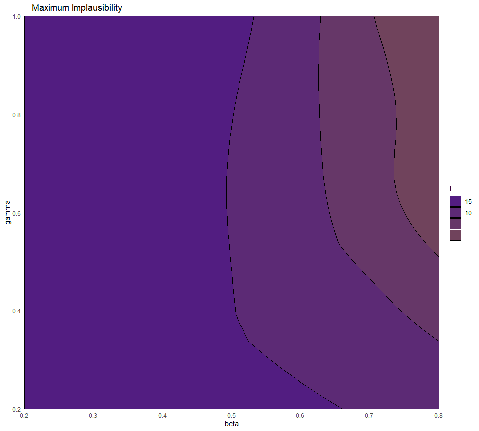
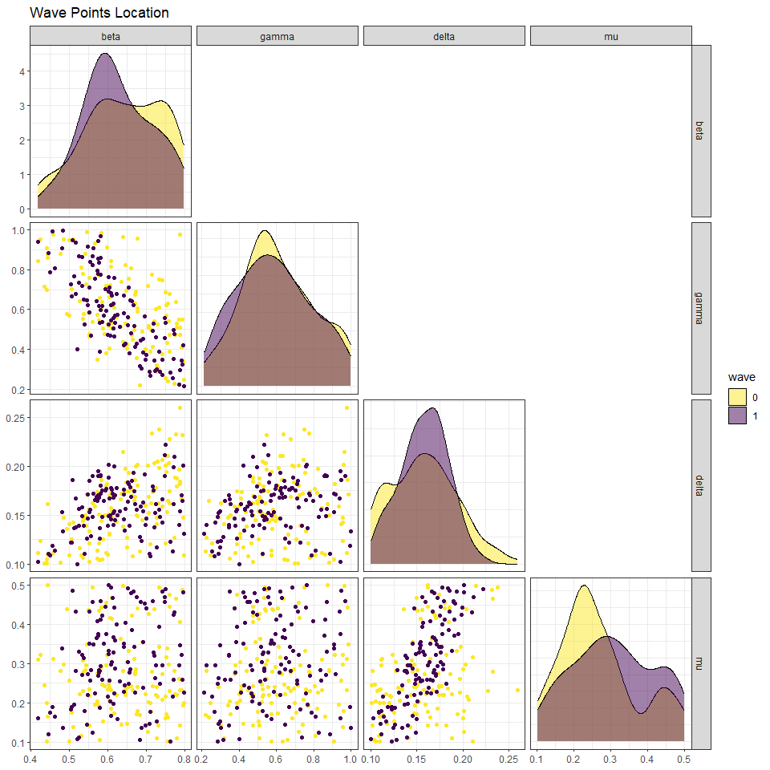
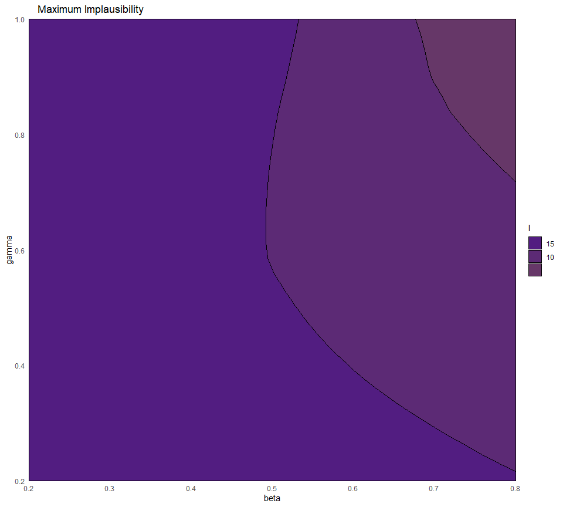
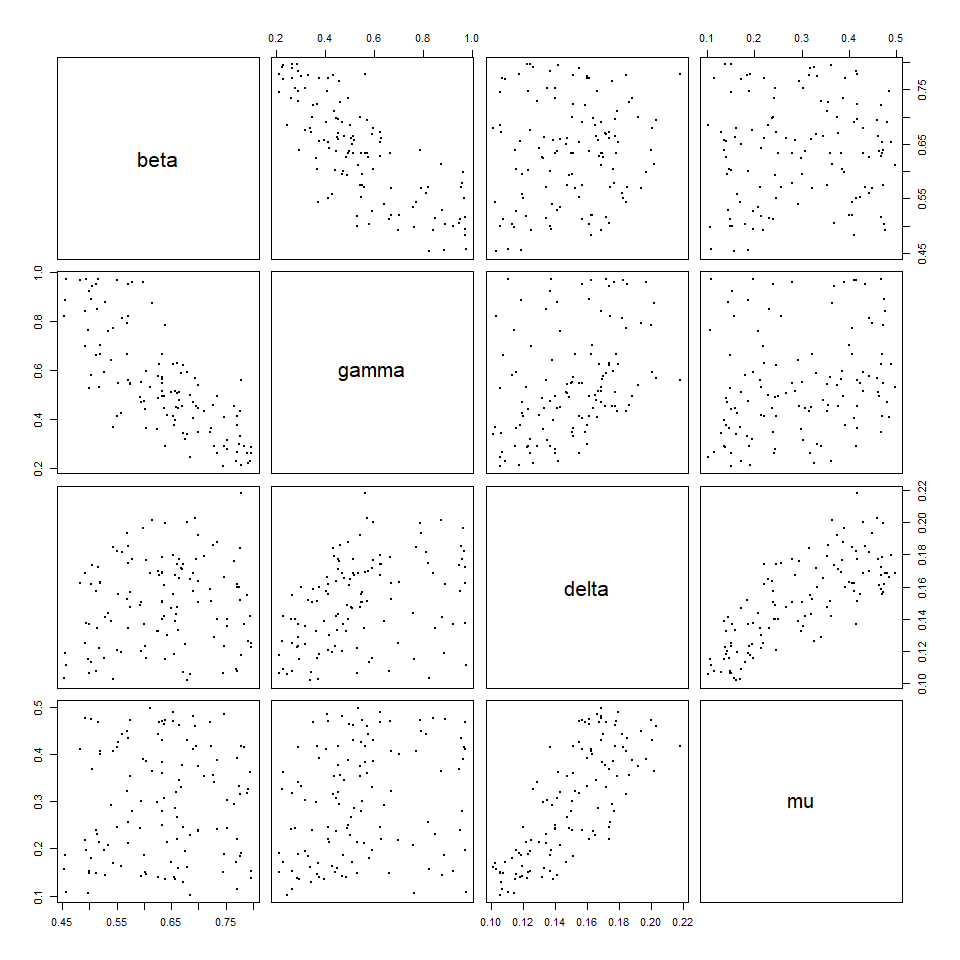
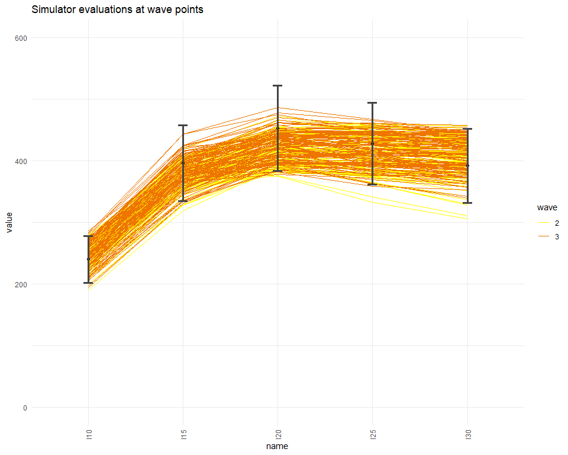
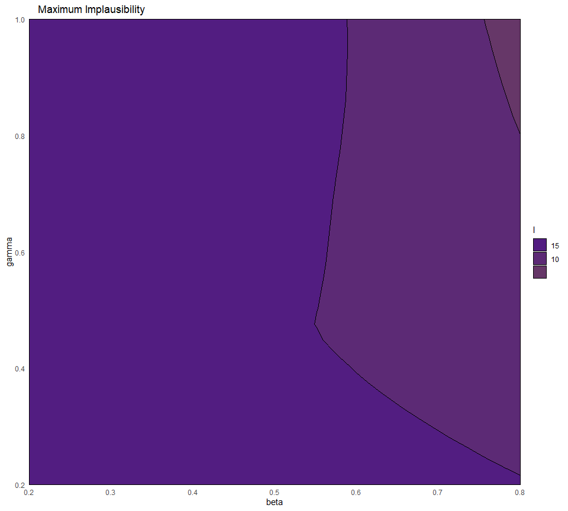
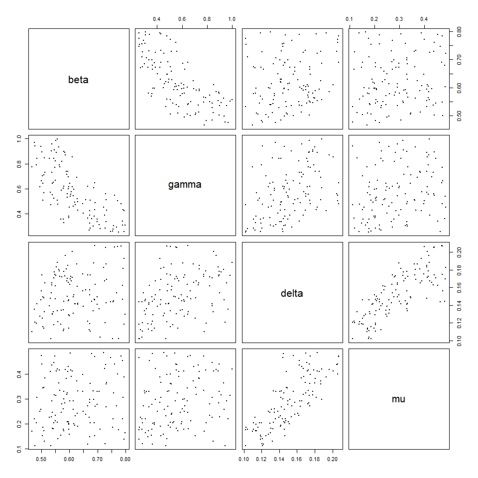
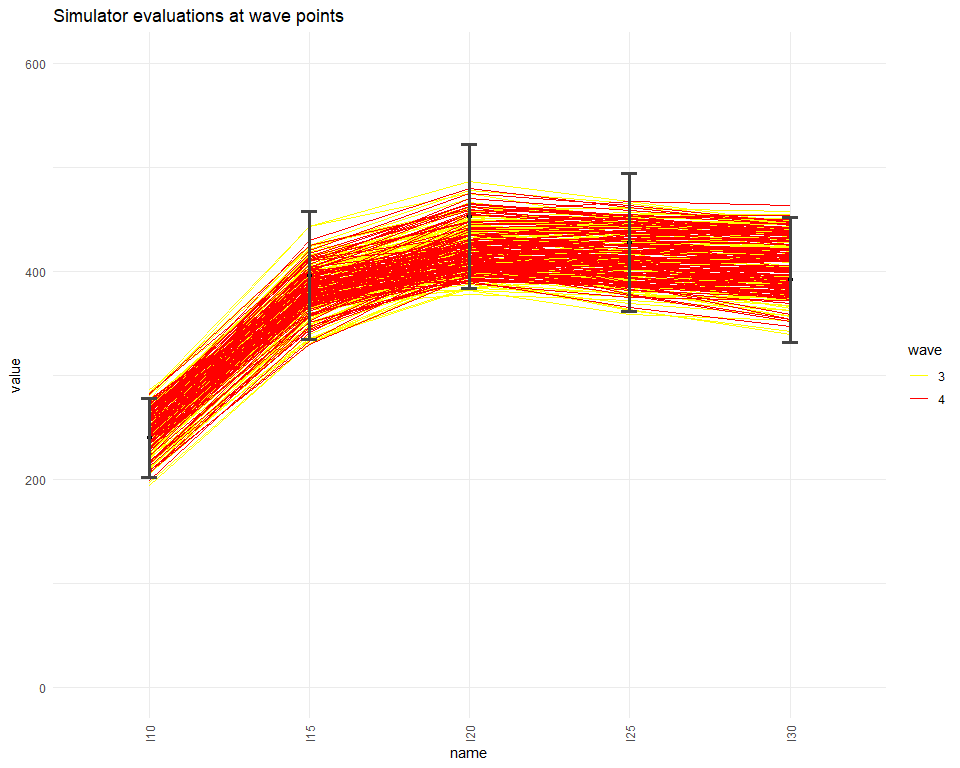

8 Further waves
We follow the same procedure for subsequent waves, with a couple of caveats.
8.1 Next wave: wave 1
8.1.1 Training wave 1 emulators
First of all we train a new set of emulators, in the same way we did for ems0:
sampling <- sample(nrow(wave1), 40)
train1 <- wave1[sampling,1:9]
valid1 <- wave1[!seq_along(wave1[,1])%in%sampling,1:9]
new_ranges <- map(names(ranges), ~c(min(wave1[,.]), max(wave1[,.]))) %>% setNames(names(ranges))
evs <- apply(wave1[10:ncol(wave0)], 2, mean)
ems1 <- emulator_from_data(train1, output_names, ranges, ev=evs)
names(ems1) <- output_names8.1.2 Evaluating implausibility across all waves
We can apply diagnostics to this as before, using valid1 as the validation set. Assuming the diagnostics are acceptable, we then proceed to consider implausibility - however, we need the implausibility over the whole input space, and the new emulators have only been trained on a subset thereof. We must therefore consider implausibility across all waves, rather than just the wave under consideration at the time.
all_waves <- c(ems0, ems1)
all_targets <- c(targets, targets)
emulator_plot(all_waves, plot_type = 'nimp', targets = all_targets, cb=TRUE)
This may seem an unwieldy way to approach this (and it is, at present); however, it is important to remember that the number of emulators at each wave may not be the same; for example, if we have had to remove a model output at wave 1, then the targets would be accordingly changed. In this illustration case, we did not have to worry about doing so since we have assumed that all targets can be emulated.
If we compare the implausibility plot we just obtained with the implausibility plot from the previous wave, we see that the red area has increased significantly: this shows that wave 1 is shrinking down the non-implausible space, exactly as we expected.
The remainder of the analysis proceeds much as in the first wave. In generating new parameter sets, we would of course provide all_waves to the point generation function.
points_2 <- generate_new_design(all_waves, 120, all_targets, measure.method = 'maximin')
plot(points_2, pch = 16, cex = 0.5)
We can compare the distribution of parameter sets at the end of wave0 with that of parameter sets at the end of wave1:

The last step is to create wave2, that will be used to train
wave2 emulators.
points_2_outputs <- getOutputs(points_2, seq(10,30,by=5))
wave2 <- data.frame(cbind(points_2,points_2_outputs))%>%
setNames(c(names(ranges),paste0("I",seq(10,30,by=5)), paste0("EV",seq(10,30,by=5))))Through the simulator_plot function we see how much better the wave2 parameter sets perform compared to wave1 and wave0 parameter sets.
all_points <- list(wave1[1:9], wave2[1:9])
simulator_plot(all_points, targets, zero_in = FALSE, palette=c("yellow", "red")) + ylim(c(0, 600))
Next waves of the process can be produced simply repeating all the steps in section 8.1.
8.2 Next wave: wave 2
8.2.1 Training wave 2 emulators
sampling <- sample(nrow(wave2), 40)
train2 <- wave2[sampling,1:9]
valid2 <- wave2[!seq_along(wave2[,1])%in%sampling,1:9]
new_new_ranges <- map(names(ranges), ~c(min(wave2[,.]), max(wave2[,.]))) %>% setNames(names(ranges))
evs <- apply(wave2[10:ncol(wave0)], 2, mean)
ems2 <- emulator_from_data(train2, output_names, ranges, ev=evs)
names(ems2) <- output_names8.2.2 Evaluating implausibility across all waves
As before, we need to consider implausibility across all waves, rather than just the wave under consideration at the time.
all_waves <- c(ems0, ems1, ems2)
all_targets <- c(targets, targets, targets)
emulator_plot(all_waves, plot_type = 'nimp', targets = all_targets, cb=TRUE)
To generate new parameter sets:
points_3 <- generate_new_design(all_waves, 120, all_targets, measure.method = 'maximin')
plot(points_3, pch = 16, cex = 0.5)
We now create wave3:
points_3_outputs <- getOutputs(points_3, seq(10,30,by=5))
wave3 <- data.frame(cbind(points_3,points_3_outputs))%>%
setNames(c(names(ranges),paste0("I",seq(10,30,by=5)), paste0("EV",seq(10,30,by=5))))Through the simulator_plot function we check how much better the wave3 parameter sets perform compared to the original wave2 parameter sets.
all_points <- list(wave1[1:9],wave2[1:9], wave3[1:9])
simulator_plot(all_points, targets, wave_numbers=c(2,3), zero_in=FALSE, palette=c("gold", "yellow", "darkorange2")) + ylim(c(0, 600))
Let us now take a look at the plot lattice from the first wave

Figure 8.1: Plot lattice for first wave
and the plot lattice from the last wave
Figure 8.2: Plot lattice for third wave
The optical depth plots (lower diagonal) shows that the proportion of acceptable points for the third wave is considerably smaller than that for the first wave.
8.3 Next wave: wave 3
8.3.1 Training wave 3 emulators
sampling <- sample(nrow(wave3), 40)
train3 <- wave3[sampling,1:9]
valid3 <- wave3[!seq_along(wave3[,1])%in%sampling,1:9]
new_new_new_ranges <- map(names(ranges), ~c(min(wave3[,.]), max(wave3[,.]))) %>% setNames(names(ranges))
evs <- apply(wave3[10:ncol(wave0)], 2, mean)
ems3 <- emulator_from_data(train3, output_names, ranges, ev=evs)
names(ems3) <- output_names8.3.2 Evaluating implausibility across all waves
As before, we need to consider implausibility across all waves, rather than just the wave under consideration at the time.
all_waves <- c(ems0, ems1, ems2, ems3)
all_targets <- c(targets, targets, targets, targets)
emulator_plot(all_waves, plot_type = 'nimp', targets = all_targets, cb=TRUE)
To generate new parameter sets:
points_4 <- generate_new_design(all_waves, 120, all_targets, measure.method = 'maximin')
plot(points_4, pch = 16, cex = 0.5)
We now create wave3:
points_4_outputs <- getOutputs(points_4, seq(10,30,by=5))
wave4 <- data.frame(cbind(points_4,points_4_outputs))%>%
setNames(c(names(ranges),paste0("I",seq(10,30,by=5)), paste0("EV",seq(10,30,by=5))))Through the simulator_plot function we check how much better the wave3 parameter sets perform compared to the original wave2 parameter sets.
all_points <- list(wave1[1:9], wave2[1:9], wave3[1:9], wave4[1:9])
simulator_plot(all_points, targets, wave_numbers=c(3,4), zero_in=FALSE, palette=c("white","white","yellow", "red")) + ylim(c(0, 600))
We see that all wave4 parameter sets match our targets. Since all model runs at the non-implausible space in wave4 are accurate enough (i.e. are inside the bounds for each target) we can conclude here the iterating process. It is also informative to compare the variability of the model outputs we are emulating with the emulators uncertainty. Below we show the ensemble variability and the uncertainty for ems0 and ems3 for each of the emulated outputs.
targets$I10$sigma
#> [1] 12.64
targets$I15$sigma
#> [1] 20.49
targets$I20$sigma
#> [1] 23.24
targets$I25$sigma
#> [1] 21.99
targets$I30$sigma
#> [1] 20.15
sigmas0 <- map_dbl(ems0, ~.$u_sigma)
sigmas0
#> I10 I15 I20 I25 I30
#> 15.84915 30.84366 32.12877 36.84279 38.84362
sigmas3 <- map_dbl(ems3, ~.$u_sigma)
sigmas3
#> I10 I15 I20 I25 I30
#> 25.164167 22.551737 9.906784 20.458655 20.209146We see that while ems0 uncertainties (sigmas0) are sometimes larger than the ensemble variabilities, all ems3 uncertainties (sigmas3) are smaller than the ensemble variabilities. Since the emulators variance is smaller than the uncertainty inherent to the model, the non-implausible space is unlikely to
decrease in size in the next iteration. This gives us another reason for stopping the history matching process here.
In general, another stopping criterion consists in having all the input space deemed implausible at the end of the current wave. In this situation, one deduces that there are no parameter sets that give an acceptable match with the data: in particular, this raises doubts about the adequacy of the chosen model. Finally, we can stop the history matching process if sufficient model runs at the non-implausible space of the current wave are accurate enough, i.e. if they are close enough to the targets.